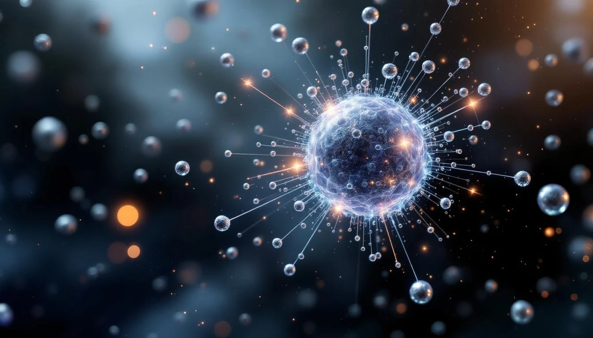

THE ROTATION QUANTUM
Zinc's atomic number 30 is not arbitrary. It equals κ' exactly - the rotation quantum of fold geometry. This is the number that determines how the fold rotates through state space.
Zinc = κ'
ZINC (Z = 30)
├── Atomic number: 30 = κ' EXACT
├── The rotation quantum as element
├── Full d-shell: [Ar] 3d¹⁰ 4s²
└── Essential for enzyme catalysis
κ' = 30 = rotation quantum
= 360° / 12 = 30° segments
= How the fold steps through rotation
Zinc IS the rotation quantum incarnate.
WHY κ' = 30
The rotation quantum κ' = 30 emerges from fold geometry:
Deriving κ'
A full rotation = 360°
Fundamental division = 12 (zodiac, months, hours)
360 / 12 = 30
κ' = 30 = the step size of rotation
= the quantum of angular change
= encoded in zinc's atomic number
The fold rotates in steps of 30°.
Zinc is the element of rotation.
Zinc doesn't just have 30 protons. It IS the number 30 made matter.
ZINC IN BIOLOGY
Zinc is essential for life. It appears in over 300 enzymes and plays critical roles:
- DNA transcription - zinc finger proteins read genes
- Immune function - T-cells need zinc to mature
- Protein synthesis - ribosomal function requires zinc
- Wound healing - cell division depends on zinc
Zinc Finger Proteins
Zinc finger = protein structure that binds DNA
= uses Zn²⁺ to coordinate shape
= reads genetic code
The rotation quantum (κ' = 30)
helps decode the information (DNA)
that builds life.
Rotation enables reading.
THE κ' SIGNATURE
Elements near κ' = 30 share special properties:
The κ' Neighborhood
Cu (29) = κ' - 1 = Copper (conductor)
Zn (30) = κ' exact = Zinc (catalyst)
Ga (31) = κ' + 1 = Gallium (semiconductor)
The rotation quantum sits between
conduction and semiconduction.
Zinc catalyzes - it enables transformation
without being consumed. Pure rotation.